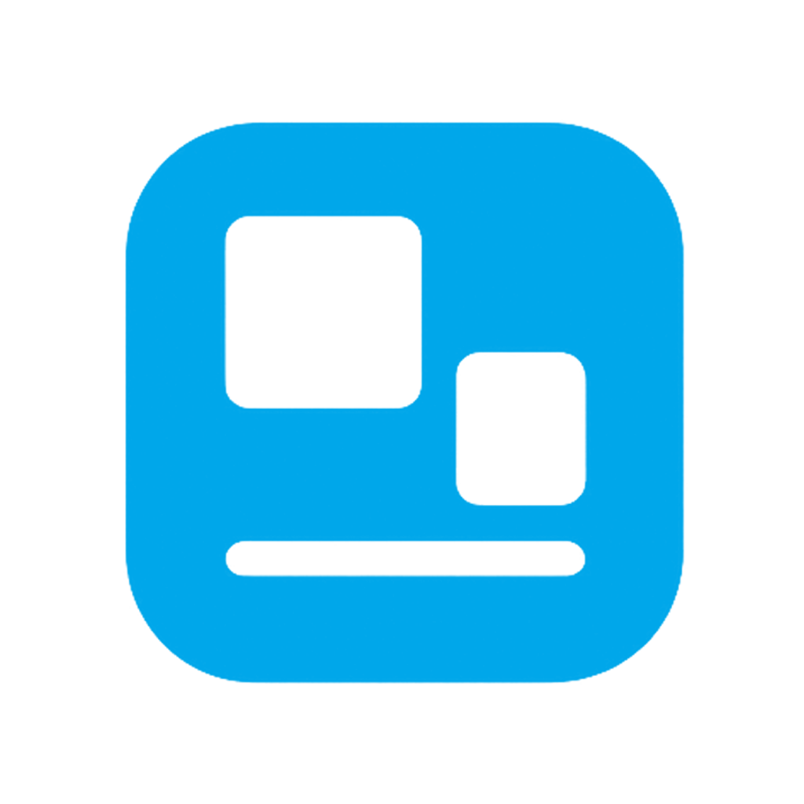

DeskletRun your HTML, CSS, and JavaScript projects as native Windows desktop applications with a clean, lightweight, and developer-first workflow.
Lightning Fast
Minimal overhead and optimized runtime ensure smooth performance without heavy frameworks.
Web to Desktop
Turn existing HTML, CSS, and JavaScript projects into Windows desktop apps instantly.
Developer Friendly
No new stacks to learn. Build desktop apps using the web technologies you already know.
Native Windows Feel
Your apps look and behave like real Windows applications with native window controls.